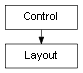

class cymel.ui.layout.Layout¶

- class cymel.ui.layout.Layout(*args, **kwargs)¶
ベースクラス:
Controlmel UI の layout ラッパークラス。
with で setParent が行える。 この挙動は pymel より改善している （pymel では、必ず親に戻ってしまい元の状態には戻らない）。
Methods:
child([idxOrPath])階層下のコントロールを得る。
子の名前リストを得る。
children()子のリストを得る。
clear()子を全て削除する。
delete()このレイアウトを削除する。
exists()UIが存在しているかどうか。
これをカレントペアレントにする。
子の数を得る。
pop()カレントペアレントを一つ上に移動させる。
Methods Details:
- UICMD()¶
- child(idxOrPath=0)¶
階層下のコントロールを得る。
- パラメータ:
idxOrPath -- 子のインデックス（ゼロオリジン）か、 階層下の相対パス。
- 戻り値の型:
.Control
- childNames()¶
子の名前リストを得る。
- 戻り値の型:
list
- children()¶
子のリストを得る。
- 戻り値の型:
list
- clear()¶
子を全て削除する。
- delete()¶
このレイアウトを削除する。
- exists()¶
UIが存在しているかどうか。
- 戻り値の型:
bool
- makeCurrent()¶
これをカレントペアレントにする。
- numChildren()¶
子の数を得る。
- 戻り値の型:
int
- static pop()¶
カレントペアレントを一つ上に移動させる。